Installation et Configuration d'un serveur DNS esclave faisant autorité

Sommaire
- Context : CUB
- Mise en place d’un serveur DNS
- 1/ Installation – Paramétrage réseau du serveur
- 2/ Configuration d'un serveur DNS esclave faisant autorité
- 3/ Mise en place de la journalisation
- 4/ Test
- 5/ Delegation de zone
- 6/ Test finaux
Context : CUB
Mise en place d’un serveur DNS esclave faisant autorité
1/ Installation – Paramétrage réseau du serveur
Adapter nos parametre en fonction de notre contexte
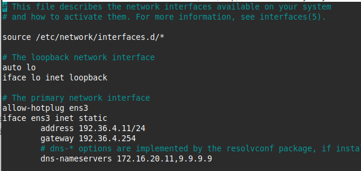
« ns1»
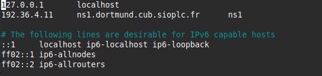
2/ Configuration d'un serveur DNS esclave faisant autorité
Déclaration de la zone que l’on souhaite transférer depuis le serveur maître sur le serveur esclave :
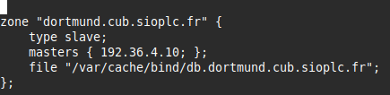
zone "dortmund.cub.sioplc.fr" { # Nom de la zone DNS que ton serveur va gérer en tant qu’esclave
type slave; # Indique que ce serveur est un DNS esclave (il ne gère pas la zone en maître)
masters { 192.36.4.10; }; # Adresse IP du serveur maître (celui qui détient la zone originale)
file "/var/cache/bind/db.dortmund.cub.sioplc.fr"; # Emplacement local où la copie de la zone sera stockée après le transfert
};
Grâce à cette configuration, le serveur esclave réalisera un transfert de zone auprès du serveur maître.
Pour que le contenu du transfert soit stocké dans un fichier de zone, il est nécessaire de le créer au préalable avec les permissions adéquates :
sudo touch /var/cache/bind/db.dortmund.cub.sioplc.fr
sudo chown bind:bind /var/cache/bind/db.dortmund.cub.sioplc.fr
3/ Mise en place de la journalisation
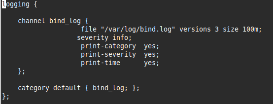
sudo touch /var/log/bind.log # crée un fichier vide nommé bind.log dans le dossier /var/log
sudo chown bind:bind /var/log/bind.log # Change le propriétaire et le groupe de ce fichier pour l’utilisateur et le groupe bind
Ajout du fichier de parametrage de la journalisation du service BIND include "/etc/bind/named.conf.log";
On autorise le daemon Bind 9 à lire et écrire dans le fichier /var/log/bind.log :
On vérifie que le nouveau fichier de configuration de AppArmor ne contient pas d’erreurs puis on redémarre le service :
sudo apparmor_parser -r /etc/apparmor.d/local/usr.sbin.named
sudo systemctl restart apparmor
sudo named-checkconf -z # Vérifie la syntaxe de la configuration de BIND et charge les zones DNS
sudo systemctl restart bind9 # Redémarre le service BIND9 pour appliquer les changements
sudo systemctl status bind9 # Affiche l’état actuel du service BIND9
4/ Test
Forcer manuellement un transfert de zone depuis l’esclave :
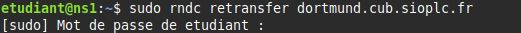
Consulter les journaux BIND pour voir le résultat :
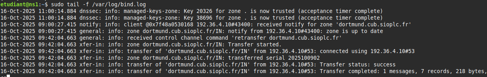
Vérifier si le fichier de zone a bien été créé :

On voit bien notre agence sur la deuxième ligne
Lire le contenu du fichier de zone :
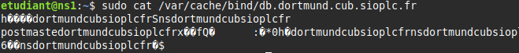
Le fichier /var/cache/bind/db.dortmund.cub.sioplc.fr est stocké dans un format binaire interne utilisé par BIND pour optimiser la vitesse de chargement — ce n’est pas un fichier texte lisible comme sur le maître.
5/ Delegation de zone
Se connecter au serveur parent puis dans le fichier de configuration
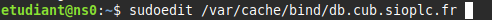
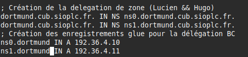
6/ Test finaux
- Test résolution du domaine grâce aux serveurs autoritaires

- Test si nous arrêtons le serveur autoritaire maître
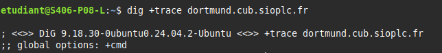
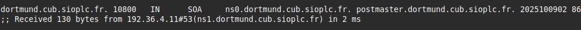
- Nous pouvons voir que notre esclave a pris le relais
- Résolution du domaine californie
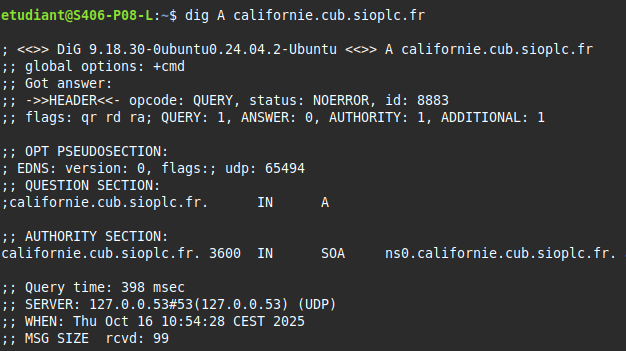